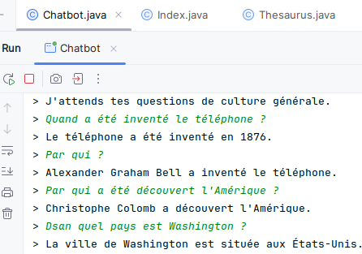

/*class="projet-img projet-img--empty" */ChatBot
Développement d'un chatbot en Java sous IntelliJ IDEA, réalisé en binôme dans des conditions proches du travail en entreprise. Le projet consistait à concevoir un chatbot de culture générale capable de répondre à des questions grâce à des réponses prédéfinies et à un système de calcul de probabilité basé sur les mots de la question. Nous avons travaillé sur la création de méthodes, d'objets, d'index automatiques, ainsi que sur un thésaurus rempli manuellement et algorithmiquement.
Ce projet m'a permis de développer ma compréhension du code, ma capacité à trouver et mettre en place des solutions, ainsi qu'à collaborer et m'adapter à un collègue.
⏱ Temps estimé : 15 à 20 heures